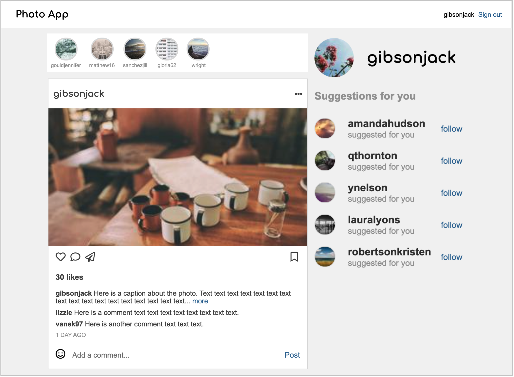
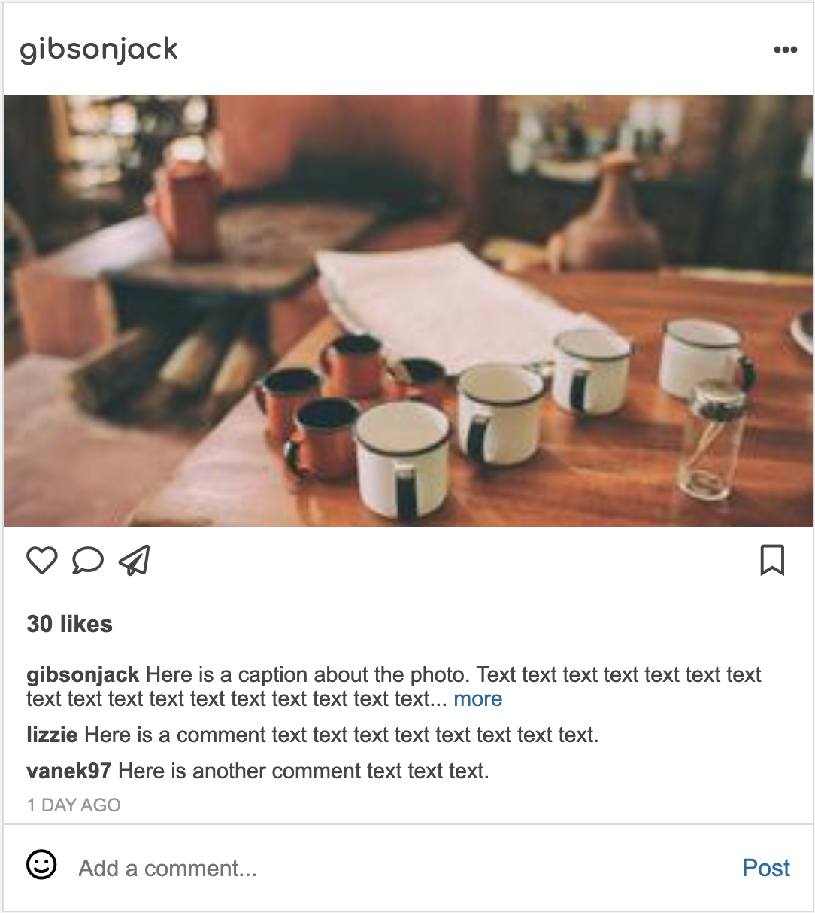
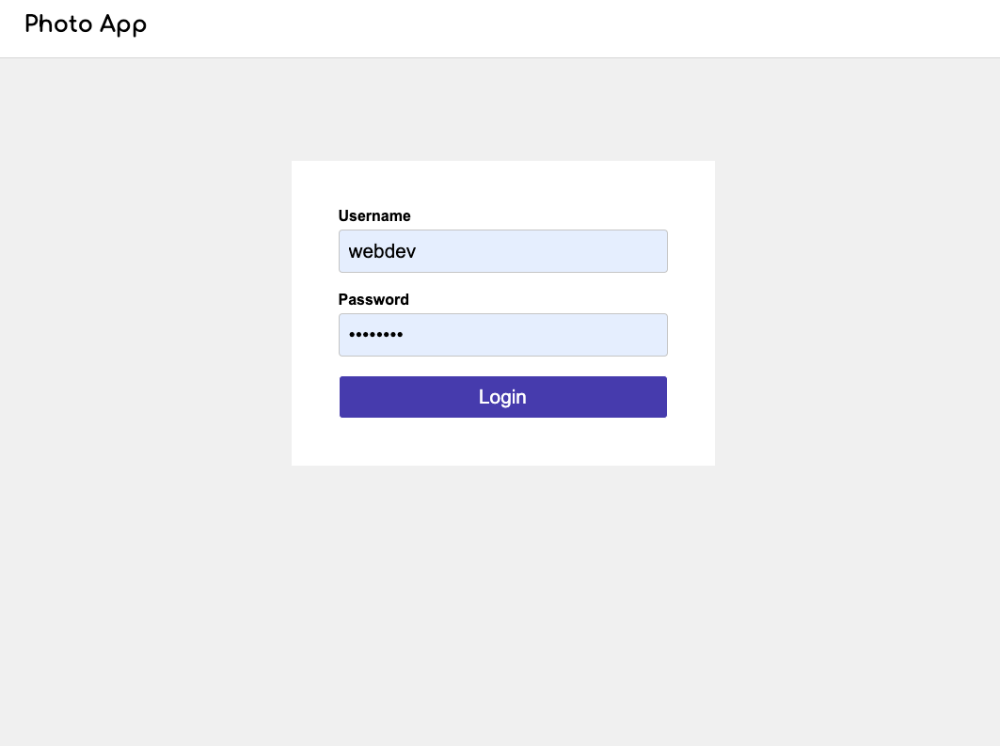
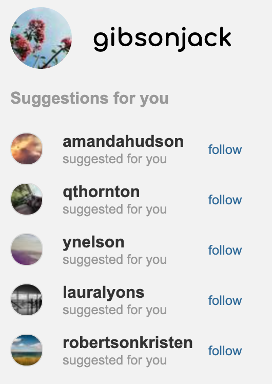

Description

A course project from Web Development based on Python Flask.
Photo App is a photo and video sharing social networking service. The app allows users to upload media that can be edited with filters and organized by hashtags and geographical tagging. Posts can be shared publicly or with preapproved followers. Users can browse other users' content by tag and location, view trending content, like photos, and follow other users to add their content to a personal feed.
Features

Users can view followings' posts, and Like/Unlike, Bookmark/Unbookmark, Comment these posts.

Users can login or signout their accounts.

Users can Follow/Unfollow recommended users.